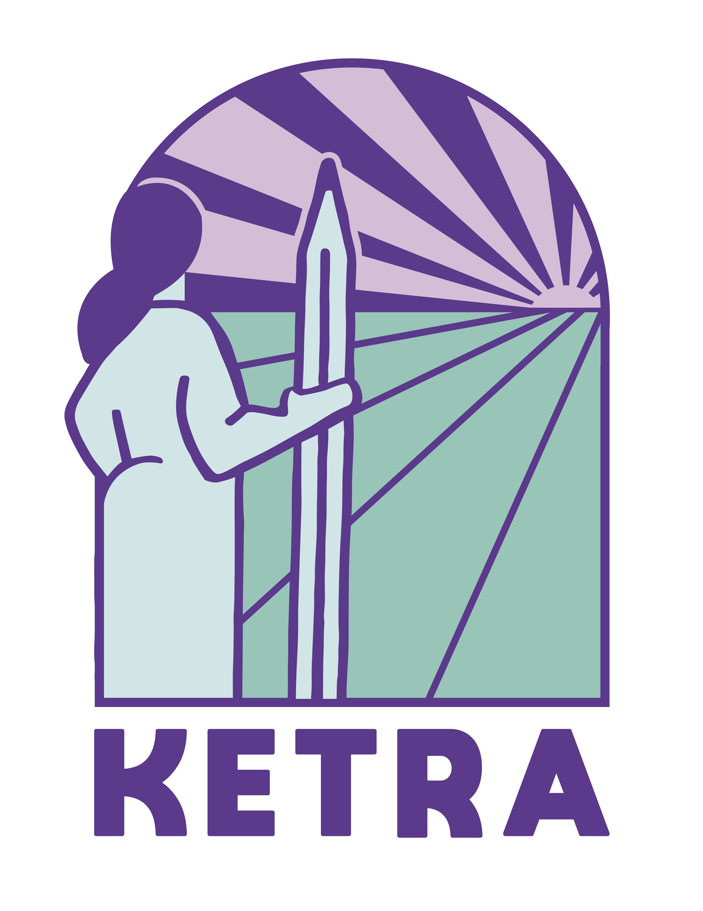

About this section Sobre esta sección
Here I gather projects developed in collective settings, especially those involving territorial work, participatory methodologies, community organization, and collaborative knowledge production. These materials include bulletins, pedagogical resources, and records of community-based processes.
Aquí reúno proyectos desarrollados en contextos colectivos, especialmente aquellos vinculados al trabajo territorial, las metodologías participativas, la organización comunitaria y la producción colaborativa de conocimiento. Estos materiales incluyen boletines, recursos pedagógicos y registros de procesos comunitarios.
Resources Recursos
Collective Mapping Bulletin with Colectiva Jengibre Boletín de mapeo colectivo con Colectiva Jengibre
A participatory bulletin produced in 2019 together with Colectiva Jengibre in Puente Alto. It documents the planning stage of a collective mapping process centered on territory, identity, inequality, and community organization.
Boletín participativo elaborado en 2019 junto a Colectiva Jengibre en Puente Alto. Documenta la etapa de planificación de un proceso de mapeo colectivo centrado en territorio, identidad, desigualdad y organización comunitaria.
Education in Carceral Contexts Educación en contextos de encierro
Between 2017 and early 2026, I was part of Ketra, a collective of women students and professionals that critically engages with education in carceral contexts from a gender perspective. The collective runs a popular pre-university program in a women’s correctional facility in the Metropolitan Region, grounded in a feminist and anti-punitive approach.
Within that space, I participated in teaching processes inside the prison and in the development of participatory methodologies for collective self-evaluation and the systematization of experiences. This trajectory strengthened my commitment to collaborative work, shared responsibility, and knowledge production oriented toward concrete social problems, including beyond remunerated or institutionalized frameworks.
Entre 2017 y comienzos de 2026 formé parte de Ketra, una colectiva de mujeres estudiantes y profesionales que problematiza la educación en contextos de encierro desde una perspectiva de género. La colectividad realiza en un Centro Penitenciario Femenino de la Región Metropolitana un preuniversitario popular, desde una mirada feminista y anti-punitivista.
En ese espacio participé en procesos de docencia dentro del centro penitenciario, así como en la generación de metodologías participativas para la autoevaluación colectiva y la sistematización de experiencias. Esa trayectoria reforzó en mí el valor del trabajo colaborativo, la responsabilidad compartida y la producción de conocimiento orientada a problemas sociales concretos, incluso fuera de marcos remunerados o institucionalizados.
